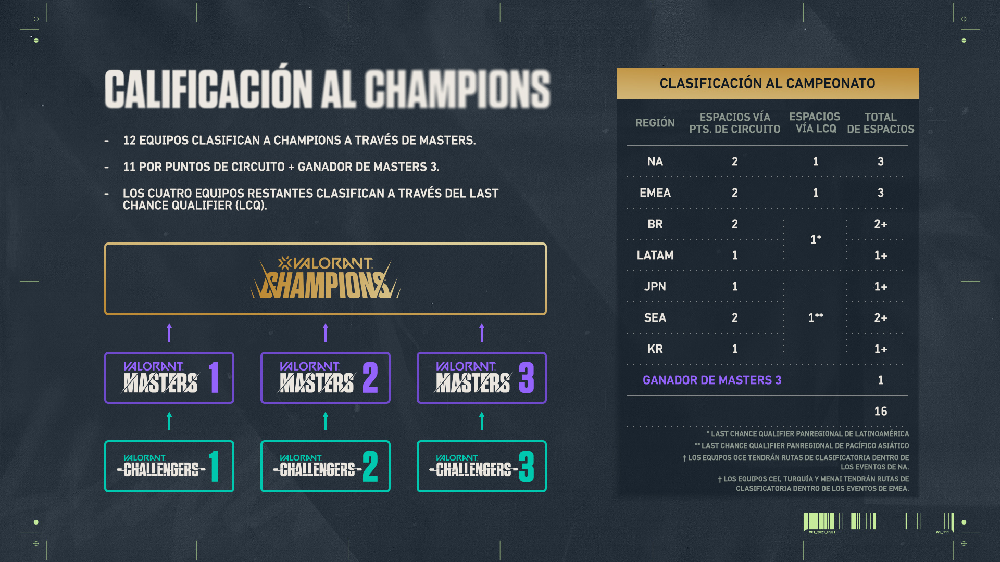

Valorant es el último juego de PC desarrollado por Riot Games, un shooter táctico en primera persona donde los jugadores deben trabajar en equipo utilizando una variedad de armas y agentes con habilidades únicas, creando un sin límite de situaciones en las que podrías sentirte un poco confundido. Dicho esto, nosotros hoy en ESPORTS te traemos una interesante guía para que sepas todo lo que necesitas saber para el inminente Torneo Champions y como funcionan las partidas de este entretenido juego.
Para empezar, debes saber que el juego estándar de Valorant llamado “Desactivación de Spike”, funciona con 12 rondas de 1:40 segundos cada una. Cada equipo deberá tomar los roles tanto de defensa como de ataque, alternándose entre ellos tras las 12 rondas para poder conseguir los 13 puntos de victoria. Los equipos en sí se componen de 5 agentes, los cuales no pueden repetirse entre ellos, además, todos los jugadores tienen acceso a un amplio arsenal de armas para una variedad de situaciones que deberán enfrentar para conseguir la victoria..
Actualmente, Valorant tiene 15 agentes de los cuales se puede escoger, y cada uno de estos tiene sus propias habilidades, fuerzas y debilidades. Además, existen 4 roles importantes que cumplen los agentes, Iniciador, Duelista, Centinelas y Controlador.
Los iniciadores proveen ayuda al equipo, por ejemplo, revelando la posición de los agentes del otro equipo. Breach y Sova son unos claros exponentes de este rol.
Los duelistas como lo dice su nombre tienen el rol de ganar la posicion peleando con el enemigo, dañar al equipo contrario y retirarse. Para este rol hay muchos agentes como Phoenix, Jett, Raze, Reyna y Yoru.
El rol de controlador trata de ser un soporte para el equipo usualmente cambiando las condiciones del mapa, por ejemplo, con muros. Viper y Omen son de esta categoría.
Por último está el rol de Centinelas, los cuales son en resumen los expertos defensivos. Sus habilidades se centran en impedir el paso y ralentizar al enemigo y los claros exponentes de esto son Cypher y Sage.
Entonces ahora que ya sabes los distintos roles que hay probablemente te preguntes y ¿cómo funciona todo en la práctica en una partida competitiva?
Bueno la verdad es que la idea es que los equipos trabajen en conjunto, de nada serviría tener a puros duelistas en un mismo equipo. Por eso se tiene que encontrar un equilibrio entre los roles de los agentes del equipo, las fortalezas y debilidades que cada uno posee y el mapa en el que se está jugando.
Ahora que ya sabes los componentes principales del juego, llegó la hora de explicarte como funciona el gran torneo Valorant Champions Tour, reconocido como el torneo más importante de todos. Este torneo es la fase final del escenario esports llevado a cabo a través de todo este año, primero se inicia con la Etapa 1: Challengers, en la cual varios equipos alrededor del mundo compiten para ganarse una entrada a la Etapa 2: Masters, en la cual solo 16 equipos ganadores tendrán la oportunidad de participar en la gran final, la Etapa 3: Champions, la culminación final de todo este proceso en la cual solo un equipo saldrá victorioso.
El Champions empieza el 1 de diciembre y durará hasta el momento de la gran final que será el día 12 de diciembre. Para prepararnos para este gran evento que se viene haremos una previa, modo podcast que podrán escuchar antes de que empiece el torneo. Cabe mencionar también que para este torneo ya estará disponible el nuevo agente del juego, Chamber.
A continuación te presentamos los 16 equipos ganadores que participarán en este torneo: EMEA: Gambit Esports, Acend, Fnatic, Team Liquid Norteamérica: Sentinels, Envy, Cloud9 Blue Brasil: Team Vikings, Vivo Keyd, FURIA Esports Sudeste Asiático: X10, Team Secret, FULL SENSE Corea: Vision Strikers Japón: Crazy Raccoon América Latina: KRU Esports
Si te interesa conocer más